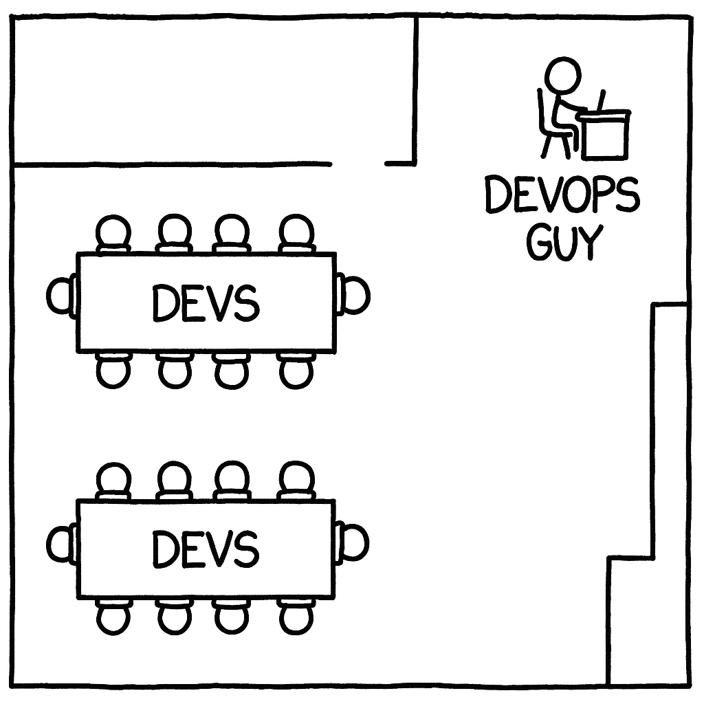

Riya’s startup had grown faster than she expected. Ten engineers, a product manager, and Arjun - infra specialist engineer everyone called “the devops.” Most days were a blur of feature work, demos, and customer requests. When production slowed down, someone would message the infra guy to “add more CPU.” When dashboards broke, they tagged him again.
The pattern felt harmless at first — everyone was busy, and he was good at unblocking things. But six months in, the signs were harder to ignore. Deployments kept getting slower. Metrics went missing. The database bill had doubled. The infra guy stopped joining standups, saying he was “catching up on tickets.”
Riya had built a strong team of builders, but somewhere along the way, no one had built for reliability. It had become someone else’s job.
The Pattern: How It Begins
Riya’s story isn’t unusual. In small teams, reliability work naturally gravitates toward one person — usually the one who’s most comfortable with infrastructure. It feels efficient in the beginning: everyone else can focus on features while the “devops” engineer keeps production stable. What starts as a practical division of labor slowly hardens into culture.

Before long, reliability becomes a specialisation rather than a shared responsibility. Developers build features, Arjun “makes them run,” and a subtle dependency takes root. Over time, that dependency becomes institutional. Engineers stop asking why something failed because someone else will fix it.
You can see the consequences in the texture of the work itself. Systems get patched, not improved. Performance problems are met with hardware requests, not code reviews. Engineers stay productive in the short term but lose operational intuition in the long run. And when that happens, reliability stops being an engineering goal and becomes a ticket queue.
This pattern doesn’t emerge out of neglect — it emerges out of speed. The early-stage push to move fast rewards shipping features, not hardening systems. But speed without reliability is momentum without direction. It gets you somewhere fast, just not always where you intended to go.
Symptoms at Scale
The culture that began as a convenience eventually starts to show up in production. Outages become harder to diagnose because only one person understands the deployment paths. Performance issues linger because engineers don’t have the tools or instincts to debug them. Postmortems, when they happen, read more like support logs than learning documents.
Developers begin to design for the happy path — not because they don’t care, but because they’ve never been asked to design for failure. A retry loop or circuit breaker seems unnecessary until the day it’s not. As systems grow more complex, these blind spots compound quietly, until every incident feels like a surprise.
The cost is not only operational but cultural. A sense of learned helplessness creeps in. During outages, the chat channels fill with “any update from DevOps?” while the rest of the team waits. Over time, engineers lose curiosity about how their software behaves once deployed. The SRE or DevOps person becomes the hero and, eventually, the burnout case.
It’s a familiar pattern in growing companies: the system runs, but no one truly owns how.
Early Warning Signs
You can usually tell when reliability has started drifting away from engineering and into a corner. The signs appear quietly, long before the big incident.
The DevOps backlog never ends
It’s always overflowing with requests to scale, provision, migrate, or patch. Most of these tasks are transactional — important, but rarely transformative. The queue grows, and so does fatigue.
Only a few participate in fixing outages
When production breaks, everyone knows who to call. The rest of the team waits for updates instead of joining the investigation. Over time, incident reviews become status reports instead of team learning moments.
Debugging stops at the boundary of comfort
Developers trace logs until they hit a system they didn’t build — other services, the infra, the database, the queue, the load balancer — and stop there. The operational understanding needed to fix cross-cutting issues never develops.
Reliability work feels like “support"
The “devops” engineer becomes a service provider inside their own company. Tickets replace conversations. Patches replace prevention. Ownership fades quietly behind convenience.
Blame starts replacing curiosity
After incidents, standups focus on “who broke it” rather than “what we learned.” Over time, teams grow defensive, not resilient.
Each of these signs is reversible. But left alone, they form a pattern — a culture where speed and stability drift apart until the gap becomes too expensive to close.
The Solution Framework: Cultural Foundation
Fixing reliability isn’t about creating a new team or buying another tool. It starts with how a company defines engineering itself. Reliability has to be engineered in, not added on — and that means shifting from ownership by role to ownership by design.
In healthy engineering cultures, the boundary between development and operations is deliberately porous. Developers aren’t done when the code merges; they’re done when it runs well in production. The people who design the system also learn to live with its consequences. It’s less about accountability in the punitive sense, and more about feedback — the system teaching its creators how it behaves under stress.
The role of specialists like Arjun doesn’t disappear; it changes. Their job isn’t to run production for others but to teach others how to run it safely. They codify patterns, build automation, and spread operational intuition across the team. In the language of Team Topologies, they act as enabling teams, not service desks.
This cultural shift is subtle but powerful. It replaces escalation paths with shared understanding, and handoffs with collaboration. When the system misbehaves, the first instinct isn’t “call devops” but “let’s look at what changed.” That shift in reflex — from delegation to curiosity — is the foundation of reliability.
Critical Practices from Day One
Cultural shifts only take hold when they’re reinforced by routine. In reliability, the routines matter more than the rituals — what the team does every week, not what they announce once a quarter. Four practices set the foundation for durable reliability from the very beginning.
Everyone is on-call
No exceptions, no rotations that shield developers from production. The goal isn’t to make everyone an SRE; it’s to connect design decisions to real outcomes. When developers see how their code behaves in production, feedback becomes instinctive. Incidents stop being abstractions and start becoming design inputs.
Root cause analyses are for learning, not blame
Each outage should leave the system — and the team — a little smarter. The most effective post-incident reviews are those that end with two lists: what we learned, and what we changed. The outcome isn’t documentation; it’s improvement.
Reliability becomes part of performance
Code quality and speed are easy to measure; system reliability and extensibility are harder, but no less important. Performance reviews and evaluations should consider whether engineers build systems that degrade gracefully, recover quickly, and cost predictably. It’s a quiet but powerful signal that reliability is everyone’s metric.
Continuous delivery is the safety net
Strong CI/CD pipelines aren’t just about speed — they’re about confidence. The fewer manual steps between commit and production, the smaller the gap between intent and outcome. Good pipelines make reliability measurable, repeatable, and eventually, automatic.
These habits are simple, and they compound. Over time, they replace dependency with ownership, and ownership with mastery. That’s how a small team grows into a reliable one — not by hiring reliability, but by engineering it in.
The First Infrastructure Hire
Every growing team reaches the same crossroads. Systems start to wobble under traffic, deployment pipelines stretch thin, and someone says, “We need a devops person.” It’s a reasonable instinct — but it’s also the point where many founders and companies unknowingly recreate the very pattern they’re trying to escape.
The right first hire isn’t someone who just “owns production.” It’s someone who teaches the rest of the team how to own it safely. This difference sounds small, but it defines the next three years of culture.
Your first infrastructure hire should be senior, high-agency, and patient enough to teach. They come from environments where reliability was designed in, not patched on — ideally late-stage startups that have already faced scale. They can read application code, understand architecture, and push back gently when asked to “just scale it up.”
You’re looking for someone who can say, “No, you fix it — but I’ll show you how.” That kind of resistance, delivered with context and skill, is what reshapes culture.
Avoid the temptation to optimize for cost or speed of hiring. Many founders justify hiring a junior DevOps engineer as a cost-saving measure — someone to “keep the lights on” while senior developers build features. It seems rational in the moment, but it quietly locks the team into technical and cultural debt. Junior hires rarely have the context or influence to push back on poor design choices, so reliability work becomes mechanical rather than instructional. What feels like a saving on salary often turns into a loss in velocity, autonomy, and clarity — the three things early-stage engineering can least afford to trade away.
A junior engineer can run Terraform scripts; only an experienced one can prevent the team from outsourcing reliability again. This person is your multiplier — the one who teaches patterns, embeds observability, and automates the routine so everyone can focus on design.
When you find them, give them authority early. Bring them into design discussions, backlog grooming, even story estimation. Reliability must have a seat at the table before the sprint begins, not after the incident ends.
The First 30–60 Days
The first infrastructure hire sets the tone for how reliability will be practiced across the company. Their early work should make reliability visible — not by taking ownership, but by showing what ownership looks like when shared. Almost founder-like, as before hiring someone, the founder CTO generally played this role.
In the first month, they should embed themselves deeply in the development flow. Sit in design discussions, comment on architecture documents, and add operational notes to user stories. The goal isn’t to gate features but to bring production thinking into the design process.
Pairing sessions matter more than automation in this phase. When a developer writes a new service, this engineer should be beside them, adding observability hooks, discussing failure modes, and setting up deployment pipelines as the code evolves. Reliability grows fastest when it’s attached to context — while the system is still being built, not after it breaks.
By the second month, they can start creating leverage: automating repetitive work, defining reusable patterns, and standardising deployment paths. The intent is to eliminate operational busywork so the team can focus on resilience, not requests.
It also helps to formalise teaching early. Internal workshops, short documentation sessions, and brown-bag discussions can spread hard-earned operational wisdom. When leadership sponsors these sessions, it signals that reliability is part of the company’s engineering DNA, not a side channel.
The best outcome after sixty days isn’t fewer incidents — it’s fewer mysteries. The team understands how their code behaves in production, and when something breaks, they know where to look first. That understanding is what transforms reliability from a function into a shared capability.
Success Metrics
A quarter into this approach, the signs of maturity are unmistakable. Deployments happen many times a day, often without ceremony. Engineers release with confidence because rollback is safe, observability is standard, and CI pipelines do most of the verification.
When incidents occur, the response feels composed. The people who built the system lead the investigation; others join to learn. MTTR drops not because incidents disappear, but because debugging has become a collective reflex. Outages no longer need heroes — they need patterns, and those patterns are already known.
Infrastructure costs stabilise. Autoscaling replaces manual provisioning. And gitops replaces manual configuration. Monitoring dashboards update automatically as new services are deployed. There’s no ticket to “add to Grafana” — it’s part of the deployment template.
Perhaps the most telling sign appears in standups. Alongside story points and velocity, teams review operational health: MTTR, error budgets, and cost trends. Reliability has become part of the everyday vocabulary, not a separate conversation.
This is what success looks like — not a perfectly reliable system, but a reliable organisation. One where engineers build, deploy, and observe as a single continuum. When that happens, reliability stops being something you chase after and becomes something you live inside.
Conclusion — Don’t Outsource Reliability
Startups don’t set out to outsource reliability. It happens slowly, in the name of speed, focus and economy. Someone takes on deployments, someone else monitors alerts, and soon devops and reliability become a function — a line item instead of a habit.
Riya learned what many successful founders eventually do: reliability isn’t a role, it’s a reflex. The moment it’s handed off, the system starts to drift. Every feature built without operational understanding adds a quiet layer of fragility. Every incident resolved by one person deepens the gap between those who build and those who sustain.
Building reliable systems isn’t about perfection; it’s about participation. When every engineer has visibility into production, understands failure, and contributes to recovery, reliability becomes collective knowledge. It becomes part of how the team thinks, not just what it measures.
The irony is that the fastest way to slow a company down is to move fast without reliability. The rework, the firefighting, the growing cloud bill — they all catch up eventually. The antidote isn’t more tools or process. It’s ownership.
So don’t outsource reliability. Engineer it in — line by line, deployment by deployment, decision by decision. That’s how teams stop reacting to production and start evolving with it.